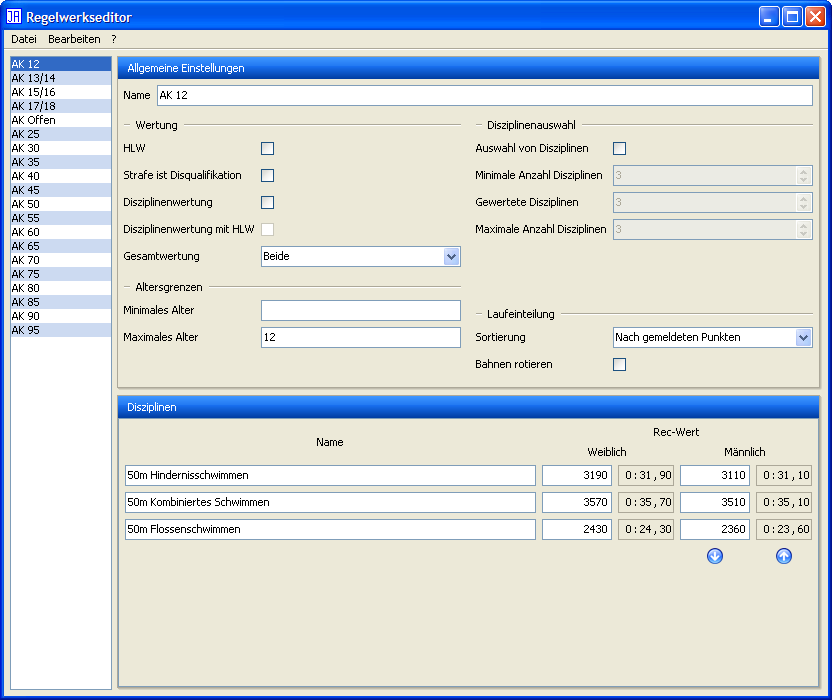
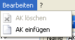
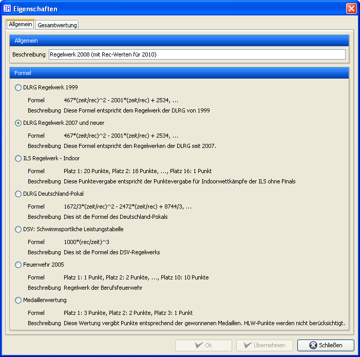
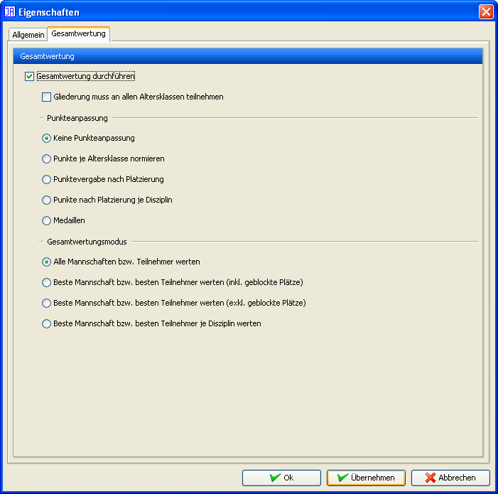

Regelwerkseditor (Mannschaft)
Der Regelwerkseditor dient zum Festlegen der folgenden Punkte:
Formel zur Punktevergabe
Anzahl und Namen der Alterklassen
Anzahl der Disziplinen je Altersklasse (inkl. Festlegung von Rec-Werten und Namen)
Durchführung einer HLW
Wertung in der Gesamtwertung
Einzelwertung ggf. mit HLW (Plätze werden auch für jede einzelne Disziplin vergeben ggf. werden nur Teilnehmer berücksichtigt, die die HLW bestanden haben)
Auswahl von Disziplinen (Teilnehmer müssen nicht alle Disziplinen absolvieren. In diesen Fällen kann festgelegt werden, wie viele Disziplinen mindestens und wie viele maximal geschwommen werden dürfen.)
Bevorzugte Sortiermethode bei der Lauflistenerstellung

Regelwerkseditor (Einzel)
Regelwerkseditor (Mannschaft)

Menü: Datei

Neues Regelwerk anlegen

Menü: Bearbeiten
Die zu bearbeitende Altersklasse kann in der linken Liste ausgewählt werden. Ihre Einstellungen werden dann im rechten Bereich dargestellt. Mittels Drag'n'Drop können Sie die Reihenfolge der Altersklassen ändern und darüber hinaus steht ihnen ein Kontextmenü (rechte Maustaste) mit weiteren Funktionen wie z.B. dem Hinzufügen einer neuen Altersklasse zur Verfügung.
Wird der Regelwerkseditor während der Auswertung eines Wettkampfes gestartet, können nur die folgenden Werte geändert werden:
Formel zur Punktevergabe
Name der Altersklassen
Anzahl, Name und Rec-Werte der Disziplinen
Teilnahme an der HLW
Wertung in der Gesamtwertung
Einzelwertung ggf. mit HLW (Plätze werden auch für jede einzelne Disziplin vergeben ggf. werden nur Teilnehmer berücksichtigt, die die HLW bestanden haben)
Auswahl von Disziplinen (Teilnehmer müssen nicht alle Disziplinen absolvieren. In diesen Fällen kann festgelegt werden, wie viele Disziplinen mindestens und wie viele maximal geschwommen werden dürfen.)
Bevorzugte Sortiermethode bei der Lauflistenerstellung
Darüber hinaus kann festgelegt werden, ob eine Gesamtwertung (eine Bewertung des Erfolgs der einzelnen Gliederungen) durchgeführt werden soll. Dabei stehen folgende Einstellungen zur Verfügung:
"Gliederung muss an allen Altersklassen teilnehmen": Eine Gliederung, die in der Gesamtwertung aufgeführt werden möchte, muss an allen Altersklassen teilnehmen. Dabei werden nur die Altersklassen berücksichtigt, die mit "Gesamtwertung" markiert sind.
"Punkte je Altersklasse normieren": Die Punkte jeder Altersklasse werden durch die Anzahl der Disziplinen geteilt. Dadurch wird sichergestellt, dass alle Altersklassen gleich gewichtet werden.
Gesamtwertungsmodus:
"Alle Mannschaften bzw. Teilnehmer werten": Es werden die Punkte aller Teilnehmer zur Gesamtwertung addiert.
"Beste Mannschaft bzw. besten Teilnehmer je Disziplin werten": Je Altersklasse und Disziplin wird jeweils nur der beste Teilnehmer gewertet.
"Beste Mannschaft bzw. besten Teilnehmer werten": In jeder Altersklasse wird nur der beste Teilnehmer gewertet.
Auch während eines Wettkampfes können die Altersklassen in einer einzelnen Datei gespeichert werden, so dass diese später wiederverwendet werden können.

Eigenschaften: Allgemein

Eigenschaften: Gesamtwertung